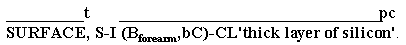

Allan, K. (1977). Classifiers. Language,53, 285-311. (A discussion and comparison of fifty different spoken languages that use classifiers - for the linguist.)
Allan, K. (1977). Classifiers. Language,53, 285-311. (A discussion and comparison of fifty different spoken languages that use classifiers - for the linguist.)
Classifiers were so named because they divide various objects and shapes into classes or groups. Much research needs to be done on classifiers, one of the most complex aspects of ASL. Valli and Lucas in their book Linguistics of ASL stress that classifiers are verbs that predicate something about an object, which, I would add, is why a classifier must be proceeded by a sign or a fingerspelled word, since verbs require a subject. Lidell and Johnson at Gallaudet University identify two basic parts to classifiers: the movement root and the handshape.
Movement roots
(1) The first movement root is the stative descriptive. The handshape moves in this group to show the outline of a surface, rather than to show the movement of the object itself:

(2) Next is the process movement root, where the relative movement of an object is implied:
Translation: "Have you heard the news? The challenger was climbing upwards after takeoff and suddenly exploded without warning. It was awful!"
(3) Finally there is the contact root, which describes the placement of objects in relationship to one another:
Translation: "Sodium Chloride crystallizes into perfect cubes."
Classifier handshapes
(1) Whole entity morphemes refer to an object as a whole, such as a car (3-CL), an animal (V:-CL), or a person standing (V-CL). (2) Surface morphemes show the outline or boundaries of objects like a wire [(2h)I-CL], the shape of a function of two variables [(L,1outline)-CL], or a function of three variables [(2h)B-CL]. (3) Instrumental morphemes represent specifically hand-held objects like a test tube (open F-CL), a microscope [(S,G)-CL], or a telescope [(2h)S-CL]. (4) Depth and width morphemes can be used for things like a tube, [(2h)F-CL], a solenoid [(2h)I-CL], or a pipe [(2h)C-CL]. (5) Extent morphemes represent amounts or volumes like a pile of papers [(2h)B-CL], the disappearance of liquid in a container [(C,B>O^)-CL], or the saturation of a capacitor [(B,5wg)-CL]. (6) Perimeter-shape morphemes refer to objects that are flat with edges like a computer chip [(2h)G>bO-CL], a lens (1outline-CL), or a polygon [(2h)1outline-CL'draw trapezoid']. (7) On-surface morphemes show large groups of people, animals, or objects that are placed or move on a surface like an audience [(2h)5:-CL], a moving herd of animals [(2h)5wg-CL], or the progress of a forest fire [(2h)5wg-CL].
Classifier rules
The topic (focus) should be identified first, then a movement root and handshape type should be combined. Note that not all handshape types are compatible with the three movement roots. Since many classifiers are one-handed, it is possible to show the relative placement or motion of two objects at the same time. Whole entity morphemes can not touch one another.
There are various kinds of grammatical agreement with classifiers. Eye gaze needs to agree with the placement or movement of classifiers. If the topic is plural, the handshape may need to agree in number and show plurality. Non-manual inflection adds a great deal of information and should agree with the kind of classifier used. The choice of classifier depends on the signer's distance from the object, attitude towards the object, and focus decided on. Let's briefly identify some of the non-manuals that research has identified.
Manual inflections: order and randomness Two standard types of manual inflections for classifiers show randomness and orderliness. Randomness is show by the (2h)alt.X-CL, where both hands have the same handshape (here represented by X) and are placed randomly in different parts of the signing space. For example, (2h)alt.A-CL could show the random placement of molecules and atoms. Other permissible handshapes would be [B], [bC], [C], [F], [ILY], [IRY], [L], [R], [V:], [1], [3], [5:]. We shall discuss how these handshapes could be used to represent specific technical concepts under the entries for the various handshapes themselves, but for all examples of this inflection, randomness is the underlying concept.
For orderliness, "in a row" or "in rows" is generated by using the appropriate CL and placing the hands together, then moving the DH > DS in little hops. Once one row is completed (if there are several) this movement is repeated a little lower, once for each row. Use "in rows" when inter-object distances are sizable in comparison to row or column distances, and "sweep in rows" for speed or when inter-object distances are small in comparison to row or column distances. "sweep in rows" is usually accompanied by puffed cheeks since there are more objects represented by it than "in rows". The possible handshapes for this inflection are the same as for (2h)alt.X-CL above.
Non-manual inflections
Certain non-manual modulations can add to or agree with information contained in the CL itself:
brrr - lips are vibrated by escaping air to show the operation of a motor;
cha - (mouth this word to rhyme with Pa), an adjective for a dimension that is sizable for its kind (for classifiers that show size but not shape);
eye squint - a non-manual signal that must be made in agreement with clenched teeth, intense, pow, or pursed lips, to show roughness, intensity, excessive or inadequate illumination, suddenness, or flow;
intense - (eyes squint, teeth are clenched, shoulders hunch), an adjective for extraordinary magnitude or abundance, usually considered too much;
mm - (lips are puckered, eyebrows lifted slightly) an adverb for regular, casual, unremarkable action;
pow - (mouth the word, with slightly squinted eyes), an adverb to show something happened in an intense instant;
puffed cheeks - an adjective for relative thickness, abundance, or magnitude (for classifiers that show size and shape);
pursed lips - (lips are puckered and air is sucked in), an adjective or adverb for relative thinness, paucity, smoothness, or ease of execution (for classifiers that show size and shape); if air is blown out, can show flow of gases;
sma - (word is mouthed like "small" without the final "ll"), an adjective for a dimension that is sizable for its kind (for classifiers that show size but not shape);
th - an adverb for careless, random, or unthinking action;
tight lips - an adverb to emphasize veracity of assertion;
zz (clenched teeth) - shows roughness.
List of handshapes
Readings on classifiers
Allan, K. (1977). Classifiers. Language,53, 285-311. (A discussion and comparison of fifty different spoken languages that use classifiers - for the linguist.)
Baker, C, and Cokely, D. (1980). American Sign Language: a teacher's resource text on grammar and culture. Silver Spring, MD: T.J. Publishers, Inc., 287-329, 333-357, 363-370. (The most accessible to the average interpreter, with many illustrations and example sentences - accompanying videotape.)
Bellugi, U. & Newkirk, D. (in press). Formal devices for creating new signs in ASL. To appear in National symposium on sign language research and training: 1977 proceedings. Silver Spring, MD: National Association of the Deaf.
Klima, E. & Bellugi, U. (1979). The signs of language. Cambridge, MA: Harvard University Press.
Lidell, S. American Sign Language syntax. The Haugue: Mouton.
Supalla, T. (in press). Morphology of verbs of motion and location in American Sign Language. To appear in National symposium on sign language research and teaching: 1978 proceedings. Silver Spring, MD: National Association of the Deaf.
Supalla, T. (1985). The classifier system in American Sign Language. In C. Craig (ed.), Noun classification and categorization. Philadelphia: John Benjamins.
Valli, C. and Lucas, C. (1992). Linguistics of American Sign Language. Washington, DC: Gallaudet University Press. (Cokely/Baker has more extensive explanation of classifiers, but this volume is more up-to-date on the most recent research in ASL linguistics.)
Wilbur, R., Bernstein, M., and Kantor, R. (1985). The semantic domain of classifiers in American Sign Language. Sign Language Studies, 46, 1-38.
Videotapes/CD-ROMs on classifiers
 Bar-Tzur, D. (2004). How can I interpret it when I don't know what it means?! Classifiers and wave dynamics. General applications of classifiers in technical topics are discussed and wave dynamics and fluid mechanics are used as specific applications for classifiers: (1) An English lecture is given on the first wave dynamics and later fluid dynamics. (2) Signs, classifiers, and negotiated signs are discussed. (3) The student then interprets the same lecture as in step 1. (4) The author models how to interpret this same lecture. To order.
Bar-Tzur, D. (2004). How can I interpret it when I don't know what it means?! Classifiers and wave dynamics. General applications of classifiers in technical topics are discussed and wave dynamics and fluid mechanics are used as specific applications for classifiers: (1) An English lecture is given on the first wave dynamics and later fluid dynamics. (2) Signs, classifiers, and negotiated signs are discussed. (3) The student then interprets the same lecture as in step 1. (4) The author models how to interpret this same lecture. To order.
Bruce, P. Classy ASL interpreting with classifiers. Signs of Development, Inc. "This study of classifiers in ASL storytelling will expose you to the following categories: Understanding the principles of classifiers, knowing how to identify classifiers, analyzing classifiers, expanding classifiers in signing skills, 'reading' classifiers [in] ASL storytelling." To order. Webmaster: "Trix" (Patricia Bruce) has an elegant signing style that will suck you into her beautiful world.
Bruce, T. More classifiers. Classifiers can do anything! (Well, almost.) This video offers a variety of stories presented by Trix Bruce entirely through the use of classifiers. See handshapes transforming into animals, places, objects and more. Videotape and book.
Hernandez, M. C4: Classifiers in storytelling. "This workshop is the first step to bringing your ASL stories and interpretations to life with and more vibrant with classifiers. There are many activities to challenge you and Manny provides models of several stories plus an example of a story without classifiers and one using classifiers." To order.
Lazorisak, C. and Lazorisak, A. Classifiers: Describing our surroundings. Signs of Development, Inc. "This workshop will look at a typical day and those things that you come into contact every day of your life. From that, Carole and Andy will discuss classifier and give samples of how to describe things such as traffic signs and how to describe perspective (walking up to a building and how the distance changes the classifiers and descriptions used.)" To order.
Lessard, P., Veltri, D., and Jarashow, B. (2000). Classifiers: A closer look. The full product contains a 476-page instructor's manual divided into 2 volumes, 5 CD-ROMs for laboratory use, an additional CD-ROM for use by the instructor, and 4 videotapes to use in the classroom.
On fire with classifiers. Signed, voiced and on-screen text. 36 minutes.
Petrone Stratiy, A.
Pursuit of ASL:
Interesting facts using classifiers. Interpreting Consolidated, Box 203, Main P. O., Edmonton, Alberta T5J 2J1, CANADA.
Stomach this! The digestive system in English and ASL. Our second technical interpreting resource presents parallel lectures on the digestive system, with vocabulary and two levels of instruction (secondary and post-secondary). English lectures are presented by Paul Buttenhoff. ASL lectures are presented by Cara Barnett. [Webmaster's note: Ms Barnett is an exceedingly clear fingerspeller and this CD provides plenty of practice in receptive fingerspelling and classifiers.]
Supalla, S. & Bahan, B. (1994). ASL literature series: ASL Literature Series: Bird of a different feather & For a decen���t living. (Webmaster: I haven't watched the second story, but the first one is rife with classifiers. You couldn't ask for a videotape that would show you more in such a short time and the story is very instructive adn entertaining.) Workbook: 197 pages; soft cover; ASL; VHS: 120 minutes; ASL only, no voicing or captions. Two narratives as told in the student videotext are signed by the original oral literary artists. The accompanying workbook allows the user to study these narratives divided into structural units: strophes, topic units, chapters, and parts.
To the heart of the matter: The cardiovascular system in ASL and English. Created by the RSA Region V Project, this CD features lectures on the cardiovascular system by Paul Buttenhoff and Kendall Kail. Paul is an assistant professor at the College of St. Catherine who primarily teaches Anatomy and Physiology. He delivers the lectures in English. Kendall is a student at the University of Minnesota in Kinesiology. He gives parallel lectures in ASL. Both languages have lectures that are considered a warm-up (a shorter text which is at a high school level) and a technical lecture, which covers more information and is more consistent with an undergraduate setting. In addition, to prepare for working with the texts, there is a list of vocabulary and diagrams for consideration. Moreover, Patty McCutcheon, a certified interpreter, provides model interpretations of both technical lectures. [Wemaster's nore: Mr Kail is an excellent ASL language model and the tapes is good prectice for fingerspelling and use of classifiers.]
Tuccelli, M. On fire with classifiers. Classifiers are specialized signs which represent people, places, or things and are also used to describe objects. Once you start using classifiers, you will wonder how you ever survived without them! Classifiers can salvage boring signers and interpreters! ONE CLASSIFIER CAN REPLACE SEVERAL SIGNS! Signed, voiced and on-screen text.
Websites on classifiers
Willig, P. Classifiers in American Sign Language. Shows animations of classifiers and their uses.